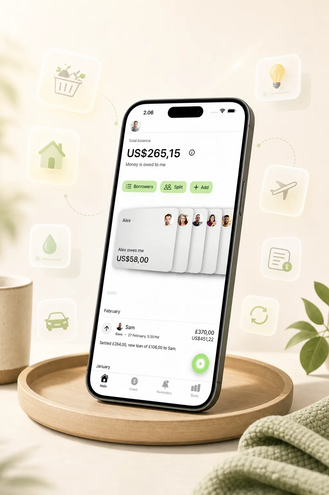
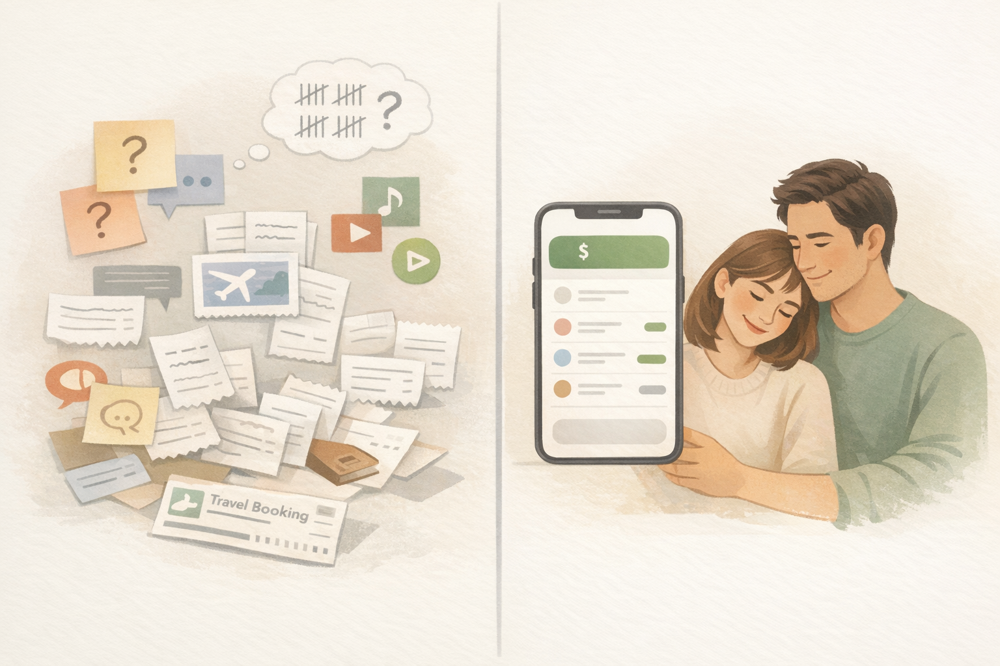

Expense Tracker for Couples
Expense Tracker for Couples Who Want Clarity Without Fighting
Shared spending inside a relationship can look small from the outside. Groceries here, rent there, tickets, travel, subscriptions, one person covering dinner, the other paying for the hotel later. The problem usually is not one big expense. It is the slow build-up of uneven everyday purchases that nobody wants to turn into a bigger conversation.
YouOweMe helps couples keep shared expenses clear with a running balance, flexible splits, recurring entries, reminders, and repayment history that stays visible over time. Instead of mentally tracking who covered what lately, you keep one calm, shared picture of what happened and what feels fair now.
If the difficult part is knowing when to bring it up, read when to ask for money back or send a repayment update.
Built for partners who want clarity without scorekeeping.
For a quick one-time couple expense, use the free Split Expense Calculator. For repeated groceries, rent, travel, subscriptions, and uneven day-to-day spending, You Owe Me keeps the running balance clear over time.
Works offline • No mandatory sign-up • Face ID / Touch ID lock

If you are looking for an expense tracker for couples
Some people search for an expense tracker for couples. Others search for a couples expense app, a shared spending app for partners, or a way to split expenses in a relationship without fighting. The real job is the same: keep shared money clear enough that it does not keep resurfacing as tension.
YouOweMe is built for ongoing couple balances, not just one-off bill splitting. It works when expenses keep happening over time, spending is uneven from week to week, incomes may differ, and you want a system that feels fair without needing to discuss every small purchase in the moment.
Who this is for
An expense tracker for couples helps most when money moves back and forth regularly and the relationship matters as much as the math.
Couples with uneven everyday spending
One partner pays for groceries more often. The other covers travel, online orders, fuel, or larger purchases later. Nothing is exactly 50/50 in the moment, but you still want the overall balance to stay visible.
Good fit for: Groceries, restaurants, household basics, transport, pharmacy runs, and day-to-day back-and-forth costs.
Couples sharing recurring costs
Some expenses keep coming back: rent extras, utilities, subscriptions, pet costs, household deliveries, and routine purchases. These are easy to underestimate when no system is holding them together over time.
Good fit for: Utilities, streaming services, shared subscriptions, rent-related extras, recurring household expenses, and monthly settle-ups.
Couples with different incomes or contribution styles
Equal is not always what feels fair. Some couples prefer 50/50. Others prefer a looser or custom split based on income, timing, or who usually handles certain categories.
Good fit for: Custom splits, uneven incomes, category-based sharing, and contributions that vary over time.
Couples who want less friction, not more control
This is for partners who do not want constant transfers, constant reminders, or constant “who paid last?” conversations. The goal is clarity that protects closeness, not a colder system.
Good fit for: Periodic reconciliation, calmer conversations, and reducing resentment before it builds.
What usually creates tension
Most couple money tension does not start with one dramatic financial conflict. It starts with repeated small uncertainty.
Everything stays in memory
One of you remembers covering groceries three times. The other remembers paying for a booking, a dinner, and something else last week. Neither version is fully wrong, but neither is clear enough to feel solid.
Money conversations happen too late
You let small imbalances build because bringing them up feels petty. By the time you finally mention it, the conversation carries more emotion than the numbers alone deserve.
Fairness is never fully defined
Some couples assume things will “even out.” Sometimes they do. Sometimes they do not. Without a shared structure, fairness becomes a feeling instead of something visible.
Recurring costs quietly distort the balance
Subscriptions, utilities, groceries, household orders, pet costs, and travel planning can make one partner feel like they are covering more than they meant to, especially when those costs repeat in the background.
Nobody wants the relationship to feel transactional
This is the emotional trap. You want clarity, but you do not want to sound like you are keeping score. So the system gets avoided, and the avoidance creates more friction than a calm system would.
How YouOweMe helps couples split expenses more calmly
The goal is not to turn your relationship into accounting. The goal is to remove the uncertainty that keeps creating the same small tension.
Log shared spending as it happens
Add groceries, rent extras, subscriptions, trips, tickets, household purchases, and one-off costs when they happen, so the balance does not depend on memory later.
Keep one visible running balance
Instead of reconstructing the past, you can see the current balance clearly. That makes couple money conversations lighter because they start from facts, not recollection.
Split equally or custom
Some couples want 50/50. Others need something more flexible. YouOweMe supports equal or custom splits, so the setup can reflect what feels fair in your relationship.
Organize recurring costs
Recurring entries and reminders help with subscriptions, utilities, household bills, pet costs, and other couple expenses that keep returning.
Track periodic settle-ups
You do not need to settle every coffee or every grocery run instantly. Many couples prefer a running balance and an occasional reset when it makes sense.
Make harder follow-ups calmer if needed
If shared spending turns into a more sensitive balance, Money Conversations and the money-owed workflow can help turn the real numbers and history into a clearer message in a tone that fits the relationship. For a one-time partner-safe message, use the partner-safe repayment reminder text examples; for ongoing couple balances, You Owe Me keeps the real history together.
What couples actually use it for
A couples expense tracker matters most when the same relationship keeps generating real shared costs over time.
Daily shared costs
- Groceries
- Coffee
- Meals
- Taxis
Household bills
- Rent extras
- Utilities
- Internet
- Subscriptions
Travel and larger purchases
- Hotels
- Flights
- Tickets
- Shared plans
Balance and fairness
- Partial repayments
- Uneven spending
- One running balance
- Less mental math
Why this works better than notes, memory, or a spreadsheet
The best system is not the most formal one. It is the one that gives enough clarity without adding more emotional weight.
When the system is memory, notes, or a spreadsheet
- One person usually ends up tracking more than the other
- Small purchases are easy to miss
- Recurring costs fade into the background
- The current balance depends on how recently someone updated it
- Opening and maintaining a spreadsheet often feels heavier than the situation deserves
- The conversation can slip into “my version versus your version”
When the system is built for couple spending
- Shared costs and repayments live in one running history
- The current balance stays visible
- Equal or custom splits are easier to apply consistently
- Recurring costs stay connected to the same system
- Periodic check-ins feel lighter because the numbers are already there
- Clarity shows up before resentment has time to grow
A calmer system does not make a relationship more transactional. It usually does the opposite.

What this looks like in real life
People already use YouOweMe for relationship situations like these.
One partner covers groceries while the other covers travel or larger costs.
Shared expenses accumulate into one running balance instead of daily transfers.
Subscriptions and utilities repeat monthly without repeated discussion.
A partner gets clarity without sounding accusatory or petty.
Why couples keep using it
The value is not just that the app can track expenses. It is that it helps reduce the emotional load around them.
Everyday couple spending
“I also use it for everyday IOUs between my boyfriend and me: I usually cover groceries and prescriptions, while he often pays for things like flights and hotels.”
Recurring costs stay easier to manage
“The recurring charge feature is especially useful for monthly bills.”
Less awkwardness around money
“No more awkward ‘you still owe me’ talks—just open the app and it’s all there.”
Short excerpts from reviews already featured on the site.
Frequently asked questions
Is YouOweMe good for couples?
Yes. It works well for groceries, travel, utilities, subscriptions, household costs, uneven purchases, and ongoing shared balances between partners.
Do couples need to split every expense 50/50?
Not necessarily. Some couples prefer equal splits, while others use a custom arrangement based on income, category, or who tends to cover certain costs more often. The important part is having a structure both people can understand.
Can we use it without settling every transaction immediately?
Yes. Many couples prefer a running balance and periodic reconciliation instead of constant micro-transfers. YouOweMe works well for that style.
Can it handle recurring shared expenses?
Yes. Recurring entries and reminders are useful for subscriptions, utility bills, rent extras, household costs, and other repeating couple expenses.
Will this make the relationship feel transactional?
Usually the opposite. A calm system reduces the need for repeated small money conversations, mental tallying, and quiet resentment. The goal is clarity that protects the relationship, not scorekeeping.
Is this better than using a spreadsheet?
For ongoing relationship spending, usually yes. Spreadsheets often go stale, feel heavy on mobile, and still depend on manual upkeep. A lighter system is easier to keep using consistently.
Can it help if one of us needs to follow up more gently?
Yes. If shared spending has turned into a more sensitive balance, the money-owed workflow can help generate a clearer follow-up or repayment-update message based on the real numbers and history.
Related solutions and guides
If your situation is more specific, these are the best next places to go.
Keep shared spending clear without turning money into tension
If money comes up regularly in your relationship, you do not need to keep carrying the balance in your head. You need a system that makes things feel clearer, lighter, and easier to talk about.
YouOweMe helps couples track shared expenses, keep a visible running balance, split fairly, handle recurring costs, and reduce the uncertainty that turns small imbalances into repeated friction.
Built for groceries, rent, travel, recurring shared costs, unequal day-to-day spending, and calmer couple money conversations.
Updated